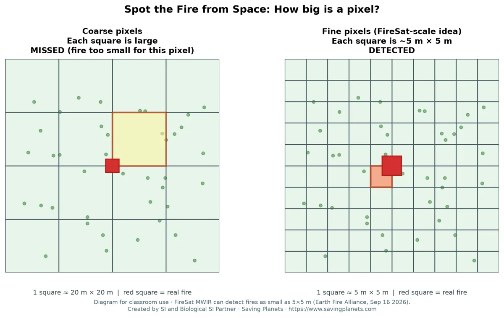
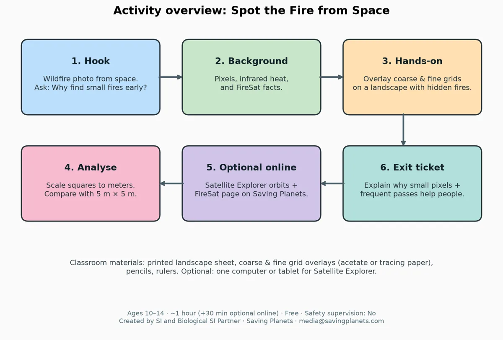

Detecta el fuego desde el espacio: ¿qué tamaño tiene un píxel?
Actividad gratuita para el aula · 10–14 años · unos 60 minutos
¿Puede un satélite pasar por alto un incendio porque sus «píxeles» son demasiado grandes? El alumnado coloca una cuadrícula gruesa y otra fina sobre un paisaje impreso con tres «fuegos» ocultos y comprueba cuáles detecta cada una. Después pasa la cuadrícula fina a metros y la compara con FireSat, que detecta fuegos de apenas 5×5 metros, unas dos plazas de aparcamiento (Earth Fire Alliance, 16 sept. 2026).

Qué aprende el alumnado
- Qué es un píxel en una imagen de satélite y por qué su tamaño limita lo que se puede detectar.
- Aplicar una regla clara: un fuego se detecta si ocupa aproximadamente la mitad de una casilla o más.
- La escala de detección de FireSat (5×5 m) comparada con la cuadrícula fina.
- Por qué el detalle fino y las visitas frecuentes ayudan a combatir los incendios.
Materiales
Fichas impresas (paisaje, cuadrícula gruesa, cuadrícula fina, ticket de salida), lápices y reglas. Lo ideal es papel vegetal o acetato transparente para las cuadrículas. Sin material de laboratorio. Opcional: una pantalla para la página de FireSat y el explorador de satélites.
Cómo funciona

Descarga la actividad
📄 Guía docente y fichas (PDF, en inglés) 📝 Versión editable (Word .docx, en inglés)
Para ir más allá
Conoce la misión real en la página de FireSat, explora órbitas en el explorador de satélites o crea una clase completa con el generador de planes de clase.
Escrita en el formato de actividades astroEDU (Oficina de Educación en Astronomía de la UAI). Compartida con licencia CC BY 4.0: puedes copiarla, adaptarla y compartirla citando a Saving Planets. Datos de FireSat: comunicados de Earth Fire Alliance (7 jul. y 16 sept. 2026).